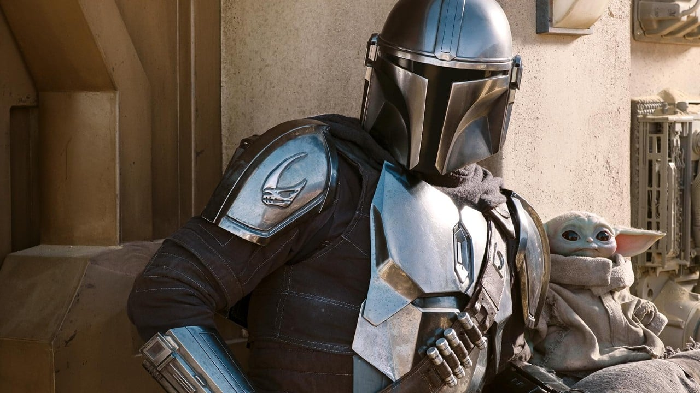
 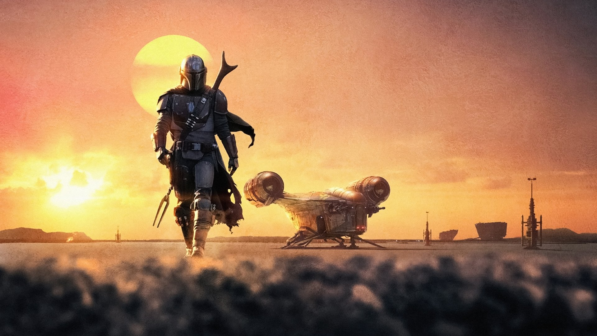
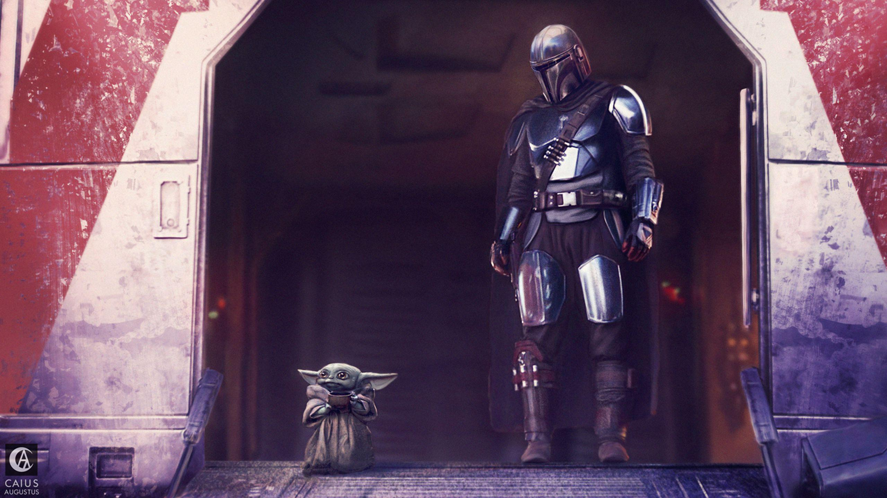
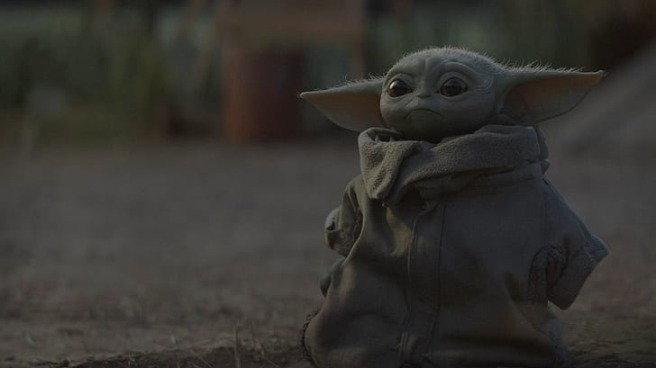
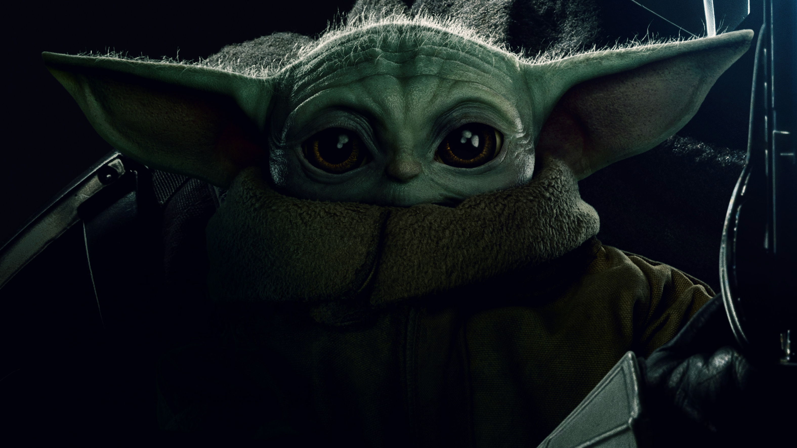
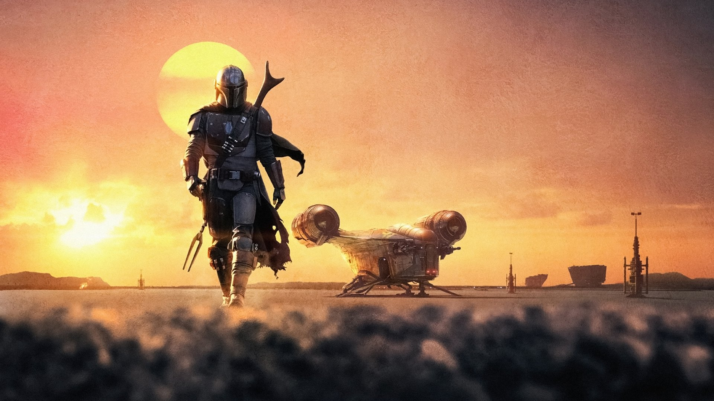
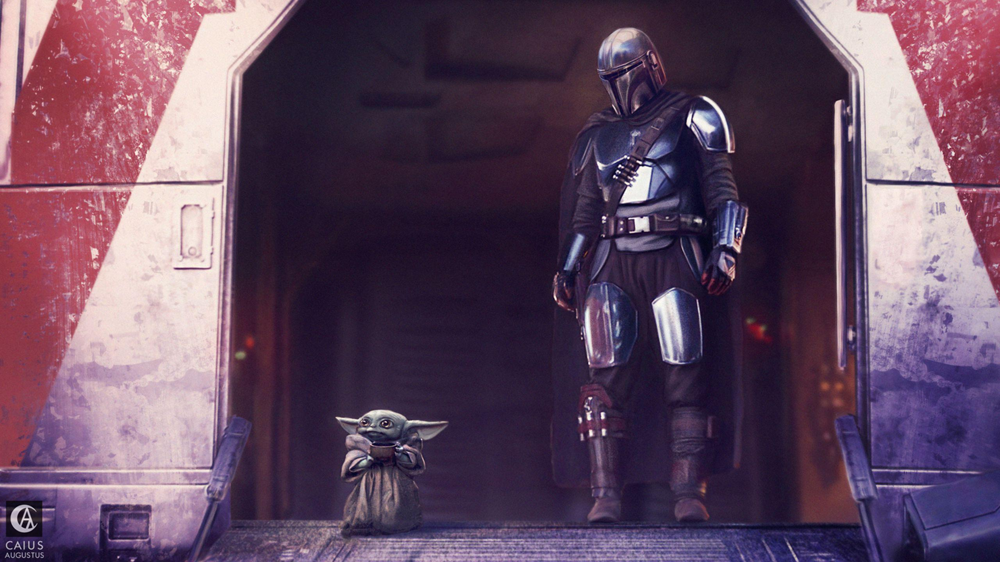
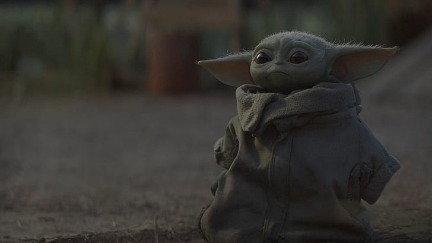
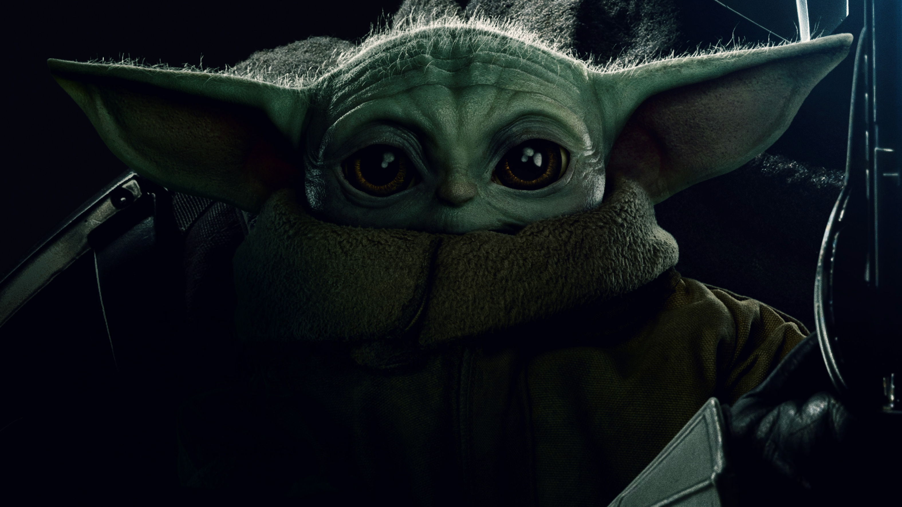
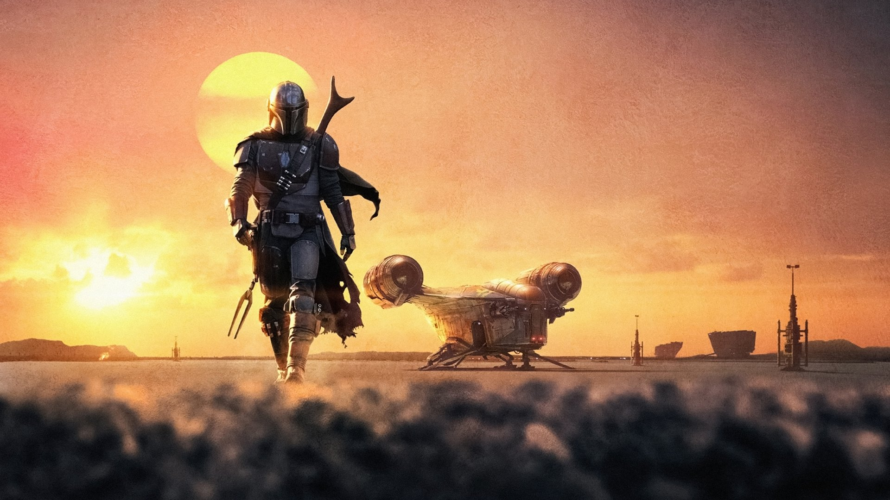
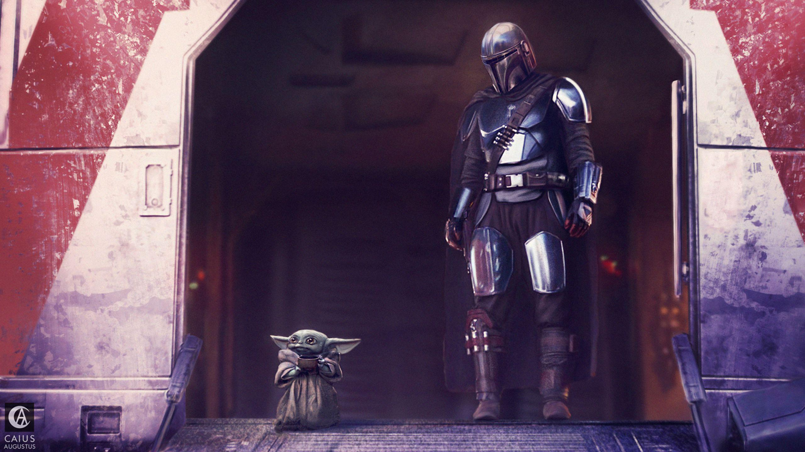
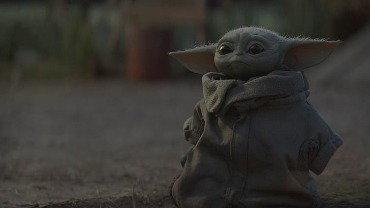
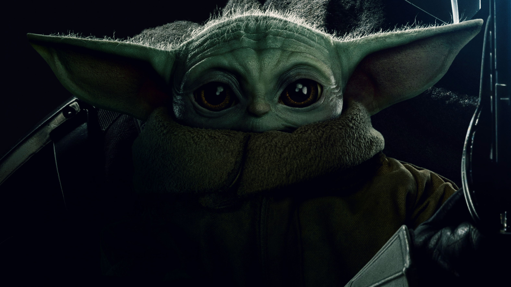
Em The Mandalorian, acompanhamos a história de Din Djarin (Pedro Pascal), um guerreiro solitário que trabalha como caçador de recompensas. Ele embarca numa jornada pelos territórios esquecidos da galáxia, logo após a queda do Império e antes da criação da temida Primeira Ordem.